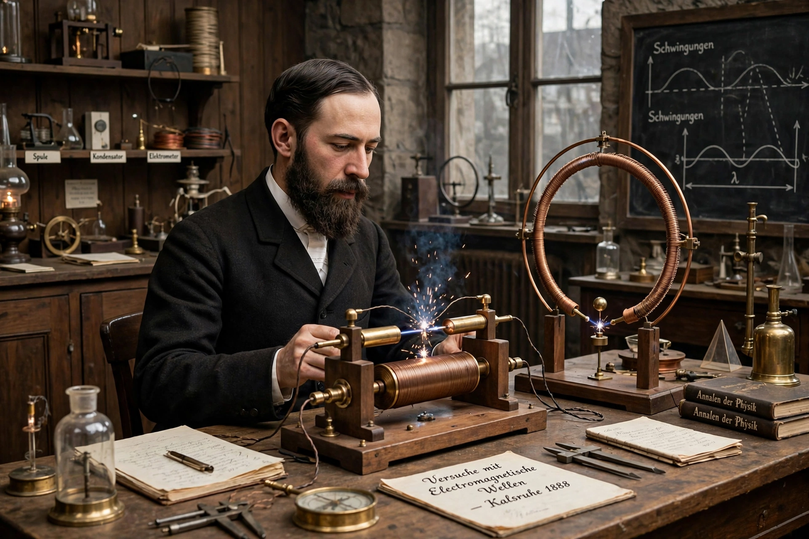

Heinrich Hertz

Heinrich Rudolf Hertz (22 February 1857 – 1 January 1894) was a German physicist who first conclusively proved the existence of the electromagnetic waves predicted by James Clerk Maxwell's equations. Working in Karlsruhe between 1886 and 1889, Hertz generated and detected radio waves in the laboratory, demonstrating their reflection, refraction, polarisation, and interference. The SI unit of frequency, the hertz (Hz), is named in his honour. He also made the first observations of the photoelectric effect, later explained by Einstein.
| Born | 22 February 1857, Hamburg, German Confederation |
|---|---|
| Died | 1 January 1894 (aged 36), Bonn, German Empire |
| Known for | Experimental proof of electromagnetic waves; photoelectric effect |
| Mentors | Hermann von Helmholtz, Gustav Kirchhoff |
Life and career
Hertz was born in Hamburg into a prosperous family; his father was a barrister and later a senator. He studied engineering briefly in Frankfurt and Munich before turning to physics in Berlin, where he became a student of Hermann von Helmholtz and received his PhD in 1880. After appointments at Kiel, he became professor of physics at the Technische Hochschule in Karlsruhe in 1885, and in 1889 he moved to the University of Bonn as professor of physics.
Electromagnetic waves
In Karlsruhe, Hertz built an apparatus with a spark-gap oscillator as transmitter and a loop of wire with a small gap as receiver. He showed that the signals travelled at the speed of light and behaved like light waves, and he measured their wavelength and velocity. Published between 1887 and 1890, the experiments confirmed Maxwell's theory and laid the foundation for wireless telegraphy and radio — although Hertz himself famously saw no practical use for the discovery. In 1887 he also noticed that ultraviolet light falling on electrodes discharges them more readily, the first observation of the photoelectric effect.
Death and legacy
Hertz's health declined in the early 1890s, and he died in Bonn on 1 January 1894, aged 36, of complications following surgery, generally reported as granulomatosis with polyangiitis (Wegener's granulomatosis). His collected papers on electromagnetic waves became a classic of physics, and his nephew Gustav Ludwig Hertz and great-nephew Carl Hellmuth Hertz also became noted physicists. The unit of frequency was officially named the hertz in 1930.